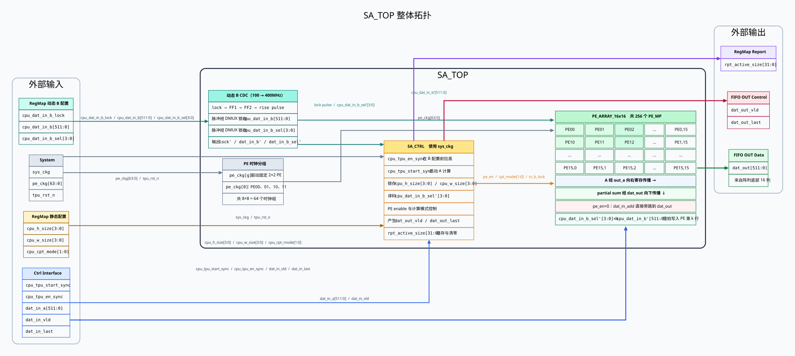
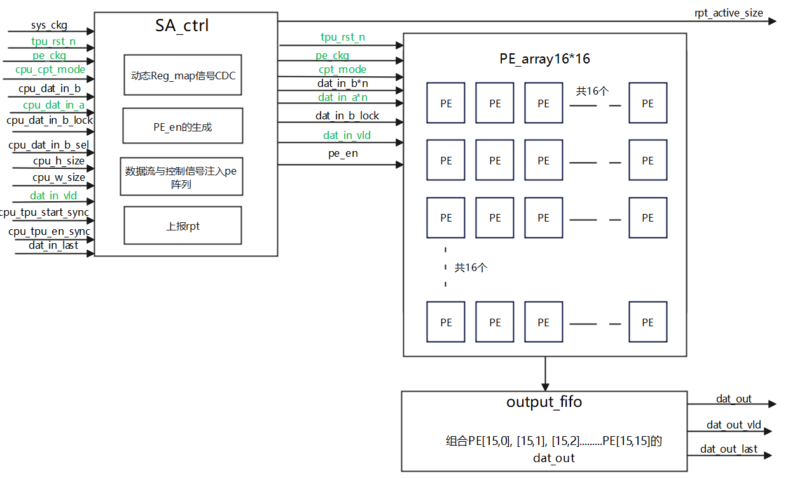

SA_TOP 脉动阵列设计报告
1 Architecture
SA_TOP 模块是 TPU 计算数据通路中的核心计算阵列，由固定规模的 16x16 PE 阵列和 SA 控制逻辑组成。
它接收 TPU_CTRL 输入的 A 数据流，并使用寄存器预加载的 B 权重，在有效 PE 子阵列范围内完成矩阵乘法或等价 MAC 密集型计算。
1.1 SA_TOP 架构拓扑图

1.2 L=1 假设下的数据流与输出有效时序
本节先采用最容易理解的基准模型：每个 PE 从接收输入到给出本级 MAC 结果的延迟为
L=1 拍。INT4、INT8、FP16、FP32 模式若采用更长流水延迟，应在相同空间关系上增加相应延迟，
不能直接照搬本节的绝对拍数。
B 配置接口位于 100MHz CPU 时钟域，而 SA_CTRL 工作在 400MHz sys_ckg 域。
一次 B 配置数据会稳定保持 1 个 CPU 周期，即 4 个 sys_ckg 周期；完整加载 16 行 B
需要 16 个 CPU 配置拍。时序图为避免过长，只展开 B0、B1、B14、B15，中间 B2～B13 用时间断点省略。
| 阶段 | 拍数 | 阵列内发生的事情 | 输出有效含义 |
|---|---|---|---|
| B 权重预加载 | 16 个 100MHz 配置拍 |
cpu_dat_in_b_lock 经两级同步后取上升沿形成 400MHz 单拍脉冲；该脉冲通过 DMUX
锁存稳定保持的 cpu_dat_in_b[511:0] 和 cpu_dat_in_b_sel[3:0]，形成
cpu_dat_in_b' 与 cpu_dat_in_b_sel'，并将对应一行的 16 个权重写入 PE。
|
dat_out_vld=0，此阶段不输出计算结果。 |
| A 首拍进入 | A-T0 |
lane0=A[0][0] 进入 PE00，其余 lane 为 0。PE00 执行第一项 MAC；
下方未参与本拍计算的 PE10～PE150 选择 dat_out=dat_in_add，作为纵向直通导线。
|
约 1 拍后左下角可观察到 raw partial sum，但它只完成了 1/16 项累加，不能作为最终 C 接收。 |
| A 波前填充 | A-T1～T14 | A 的有效 lane 按阶梯形逐拍展开并向右传播；执行 MAC 的 PE 波前扩大， 其下方未使用 PE 继续把 partial sum 直通到阵列底部。 | 物理底部端口可能持续出现 raw 数据，但 dat_out_vld 仍保持低，避免把中间部分和写入 FIFO。 |
| 输出有效窗口开启 | A-T15 后按模式延迟 L | A 的第 16 个计算拍完成，首个最终结果 C[0][0] 到达输出端。 |
从该拍开始拉高 dat_out_vld，FIFO 开始接收有效结果。 |
| 持续输出与排空 | 后续流水拍 | 后续 C 元素按阵列波前持续到达底部，最后一个结果离开后本轮计算结束。 | dat_out_vld 覆盖有效输出窗口，dat_out_last 与最后一个最终结果对齐。 |
cpu_tpu_en_sync 必须在 B 权重配置开始前拉高，并覆盖权重加载、A 流水和结果输出全过程。
首个最终结果到达时拉高 dat_out_vld；逐拍数据位置与输出颜色含义详见
“材料与笔记 → SA权重加载与流水演示”。
2 时钟、复位与 CDC 处理
2.1 时钟域与门控时钟
SA_TOP 的控制逻辑和数据通路工作在 400 MHz 系统时钟域。PE 阵列使用由系统时钟门控后得到的
pe_ckg[63:0]：256 个 PE 按每 4 个一组划分为 64 个时钟组，未参与当前 H×W
子阵列计算的时钟组可关闭，以降低无效翻转功耗。
A 数据及其 valid/last 由 400 MHz Control 侧输入，计算结果也在同一工作时钟域送往 FIFO Out； 因而主计算流水内部不需要额外的异步跨域处理。
2.2 复位策略
tpu_rst_n 为低有效全局复位。复位期间，SA_CTRL 状态机、拍数计数器、
dat_out_vld/dat_out_last、PE 数据流水和 partial sum 状态均回到空闲值，
防止复位后把残留数据误判为有效输出。
复位采用异步拉低、同步释放的原则：复位可以立即清除状态，但解除复位需分别在系统时钟和各启用的 PE 门控时钟域内同步完成。门控时钟控制还需保证复位释放阶段相关时钟可达，避免部分 PE 停留在复位状态。
2.3 外部接口与 CDC
| 信号分类 | 时钟关系 | 处理方式 |
|---|---|---|
| Control 侧 A 数据、Start/En | 400 MHz 同步域 |
cpu_tpu_start_sync 和 cpu_tpu_en_sync 已在上游完成同步，可在 SA_TOP
内直接用于启动、使能和状态锁存。其中 cpu_tpu_en_sync 必须先于首个 B 权重写脉冲拉高，
并保持到最后一拍结果输出完成；cpu_tpu_start_sync 则在 B 权重加载结束后启动 A 计算。
|
| RegMap 动态配置 | 100 MHz → 400 MHz |
只有单比特 cpu_dat_in_b_lock 进入两级同步器；对同步后的电平做上升沿检测，形成
400MHz 域单拍脉冲 cpu_dat_in_b_lock'。多比特 cpu_dat_in_b 和
cpu_dat_in_b_sel 不逐位打两拍，而是在 CPU 侧稳定保持至少 1 个 100MHz 周期，
再由该脉冲通过 DMUX 锁存到 400MHz 域寄存器，形成稳定的 cpu_dat_in_b' 和
cpu_dat_in_b_sel'。
|
| RegMap 静态配置 | 100 MHz 配置，400 MHz 使用 |
cpu_h_size、cpu_w_size 和 cpu_cpt_mode
在一次计算开始前完成配置，并在计算过程中保持不变，因此本方案不对这三组信号增加两拍 CDC 寄存器；
SA_TOP 在 start 时使用并锁存相关配置。
|
rpt_active_size 上报寄存器 |
400 MHz → 100 MHz |
在 start 有效时锁存本轮 H/W 配置，在 en 上升沿清零。
CPU 仅在计算结束后读取，此时信号已经经历较长的稳定窗口，因此无需增加复杂的 CDC 同步逻辑。
|
cpu_dat_in_b_lock、
cpu_dat_in_b、cpu_dat_in_b_sel；图中额外展开
cpu_dat_in_b_lock_ff1、cpu_dat_in_b_lock_ff2 和上升沿脉冲
cpu_dat_in_b_lock'。DMUX 锁存后的多比特域内信号画为
cpu_dat_in_b'、cpu_dat_in_b_sel'。
3 接口定义
| 信号名 | IO | 位宽 | 描述 |
|---|---|---|---|
| System Interface | |||
sys_ckg | Input | 1 | SA_TOP 系统门控时钟，目标业务频率 400 MHz。 |
pe_ckg | Input | 64 | PE 时钟组信号，供 16x16 PE 阵列分组使用。 |
tpu_rst_n | Input | 1 | TPU 全局复位信号，低有效。 |
| Ctrl Interface | |||
cpu_tpu_start_sync | Input | 1 | 启动同步信号，用于锁存本轮 active size 并启动计算。 |
cpu_tpu_en_sync | Input | 1 | TPU 使能同步信号，高有效；应在 B 权重配置开始前拉高并覆盖整轮任务。 |
dat_in_a | Input | 32*16 | 输入 A 数据流，一拍包含 16 个 32-bit lane。 |
dat_in_vld | Input | 1 | A 数据输入有效信号。 |
dat_in_last | Input | 1 | A 数据输入最后一拍指示。 |
| RegMap Interface | |||
cpu_dat_in_b_lock | Input | 1 | 动态 B 权重锁存信号；经两级同步并取上升沿后形成 400MHz 域单拍脉冲 cpu_dat_in_b_lock'。 |
cpu_dat_in_b | Input | 32*16 | 100MHz 域动态 B 权重数据，一次包含 16 个 32-bit lane；由 DMUX 在 cpu_dat_in_b_lock' 有效时锁存为 cpu_dat_in_b'。 |
cpu_dat_in_b_sel | Input | 4 | 100MHz 域 B 权重写入行选择；由 DMUX 与权重数据同拍锁存为 cpu_dat_in_b_sel'。 |
cpu_h_size | Input | 4 | 静态 H 维激活尺寸，编码为实际值减一；计算期间保持不变，不增加 CDC 寄存器。 |
cpu_w_size | Input | 4 | 静态 W 维激活尺寸，编码为实际值减一；计算期间保持不变，不增加 CDC 寄存器。 |
cpu_cpt_mode | Input | 2 | 静态计算精度配置：00 INT4，01 INT8，10 FP16，11 FP32；不增加 CDC 寄存器。 |
rpt_active_size | Output | 32 | [31:16] 为 H，[15:0] 为 W；start 锁存、en 上升沿清零，CPU 在计算结束后读取。 |
| FIFO OUT Interface | |||
dat_out | Output | 32*16 | 经 SA_CTRL 选择或对齐后的 16-lane SA 结果数据流。 |
dat_out_vld | Output | 1 | 最终结果输出有效信号；不能被阵列底部提前出现的 raw partial sum 直接触发。 |
dat_out_last | Output | 1 | SA 输出最后一拍指示。 |
4 模块功能描述
| 模块名称 | 功能描述 |
|---|---|
sa_top | SA 顶层模块，连接全部外部接口，并完成 sa_ctrl、pe_array_16x16 和 output_collector 的实例化与互连。 |
sa_ctrl | 负责动态 RegMap 信号的 CDC、active size 锁存与上报、PE 使能生成、B 权重加载控制，以及输入和控制信号向 PE 阵列的组织与传递。 |
pe_array_16x16 | 实例化并连接 256 个 PE，保存静态 B 权重，完成 A 数据横向传播、partial sum 纵向累加及阵列底部结果汇集。 |
output_collector | 对应方案草图中的 output_fifo。接收阵列底部 16 列结果，按列完成、逐拍累积的形式组织 512-bit 输出总线，并产生 dat_out_vld 和 dat_out_last。 |
5 Verilog 设计草图

sa_ctrl 直接传递到
pe_array_16x16 的信号；sa_ctrl 不改变这些信号的功能含义，
仅完成顶层到 PE 阵列的层级传递或扇出。
6 RTL 设计
6.1 顶层组织
当前 RTL 以 sa_top.sv 为集成顶层：sa_ctrl 负责配置与控制，
pe_array_16x16 负责 256 个 PE 的数据通路，output_collector
负责把阵列底部逐列完成的结果整理成 FIFO OUT 接口。PE 计算单元复用 pe_mp/PE_MP_v1.v
及其定点/浮点转换、乘法和加法子模块。
6.2 权重 CDC 与写入
单比特 cpu_dat_in_b_lock 在 sa_ctrl 中依次经过
b_lock_d1、b_lock_d2 和用于边沿比较的 b_lock_d3；
b_lock_d2 && !b_lock_d3 形成 400MHz 域单拍接收脉冲。
当该脉冲与 cpu_tpu_en_sync 同时有效时，控制器一次性锁存稳定的
cpu_dat_in_b[511:0] 和 cpu_dat_in_b_sel[3:0]。接收脉冲再延迟一拍后，
由行选择生成 one-hot 写使能，把本次 16 个权重同时写入指定 PE 行。
6.3 PE 阵列互连
pe_array_16x16 将 A 数据沿行向右传递，将 partial sum 沿列向下传递；每个 PE
保留自己的 B 权重寄存器并完成一次本地 MAC。一次 B 写传输携带 16 个 32-bit 权重，
cpu_dat_in_b_sel 决定写入 16 行中的哪一行。阵列中的每个 2×2 PE 分组共用一个
pe_ckg，共形成 64 个门控时钟组。
6.4 输出收集
output_collector 采用 IDLE、WAIT、OUTPUT 三态控制，并按计算模式选择 PE 延迟：
INT4/INT8 为 1 拍、FP32 为 4 拍、FP16 为 7 拍。每完成一列，结果写入
result_hold_q；第 k 个有效输出拍中，lane 0～k 为已经完成的列，
其余 lane 清零。W=16 时第 15 个输出拍同时拉高 dat_out_last。
cpu_tpu_start_sync 已保留在 sa_top 外部接口中，
但尚未接入 sa_ctrl；当前输出时序由
cpu_tpu_en_sync && dat_in_vld && dat_in_last 触发。
另外，当前 INT4/INT8 路径按一个 32-bit 有符号数完成乘加，尚未实现一个 32-bit lane 内的打包子字并行运算。
7 Testbench 搭建与结果对比
7.1 验证平台结构
顶层回归由公共驱动器 sa_top_case_runner.sv 完成，INT4、INT8、FP16、FP32
和 multi 五个薄封装仅负责选择模式与任务数量；sa_top_tb_smoke.sv 提供固定小数据冒烟用例。
此外还分别为 sa_ctrl、pe_array_16x16 和
output_collector 配置了模块级 testbench。
7.2 激励、参考模型与检查规则
TB 先按 16 次 100MHz 配置事务写入 256 个独立 B 权重，再用 16 个 400MHz 有效拍发送 A。
A-T0 仅 lane0 有效，A-T1 使用 lane0～1，直至 A-T15 的 16 个 lane 全部有效并拉高
dat_in_last。软件参考模型按
C[col] = Σ A[row] × B[row][col] 计算预期值；整数模式取低 32 bit 环绕结果，
浮点模式比较 FP32 编码。
scoreboard 对第 k 个输出拍检查 lane0～k 是否等于预期 C0～Ck、其余 lane 是否为零，
同时检查 X/Z、dat_out_vld 窗口及 dat_out_last 是否只在最后一拍出现；
任何任务超过 128 拍未完成都会触发超时错误。
7.3 预期值与实际结果
| 用例 | 关键预期值 | 实际检查 | 结论 |
|---|---|---|---|
| Smoke | 固定数据结果 21 | 实际输出 21 | PASS |
| INT4 | C0=f06fa532，C15=8f9864b3 | 16 列逐拍匹配 | PASS |
| INT8 | C0=12dd8980，C15=f46f1022 | 最终 512-bit 总线为 {C15…C0} | PASS |
| FP16 | C0=42ba0000 (93)，C15=42940000 (74) | 16 列 FP32 编码匹配 | PASS |
| FP32 | C0=42ba0000 (93)，C15=42d00000 (104) | 16 列 FP32 编码匹配 | PASS |
| Multi | 同一 B 连续处理 3 组 A | 共 48 列检查全部匹配 | PASS |
7.4 回归结论与覆盖边界
2026-08-07 的回归中，Questa 下 smoke、INT4、INT8、FP16、FP32、multi 六个 SA 顶层用例均编译并运行通过， 无未抑制错误或警告；Icarus 下同样为 6/6 PASS。波形可在“仿真波形”栏目查看，完整源码可在“代码设计”栏目逐文件阅读。